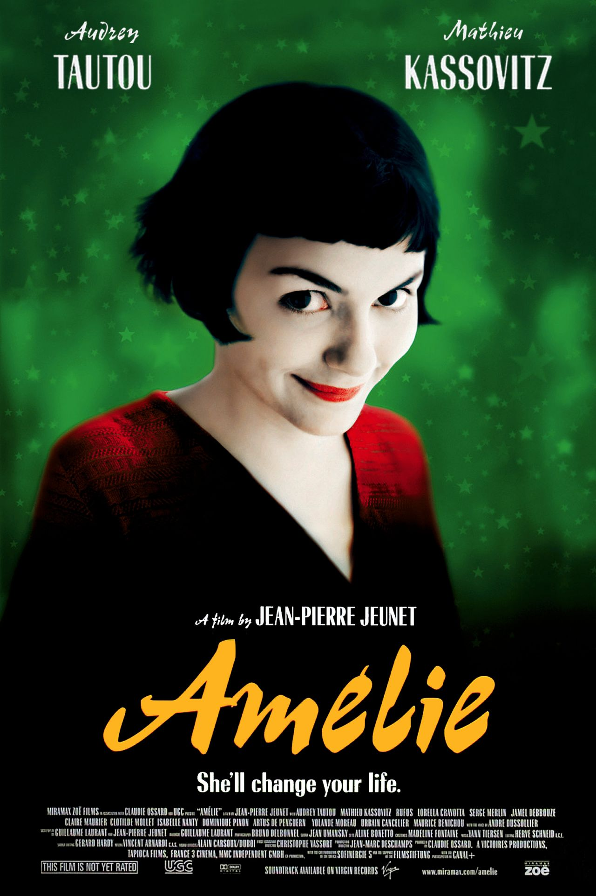
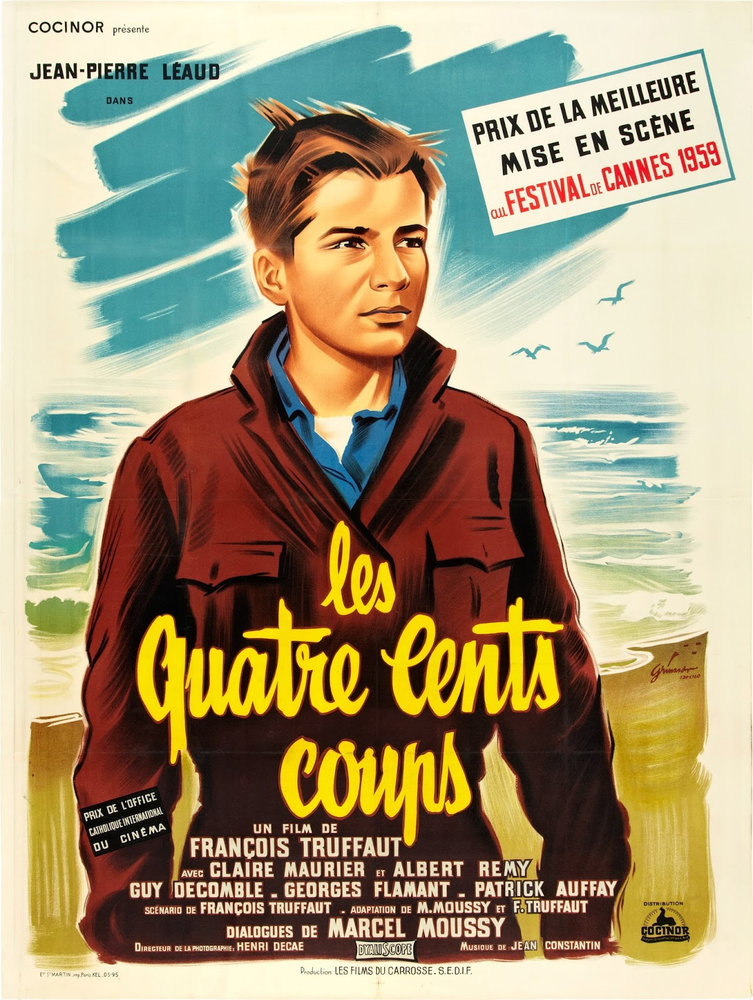

Amélie (2001)
A whimsical romantic comedy set in Montmartre about a shy waitress who secretly improves the lives of those around her.

The Intouchables (2011)
A heartwarming comedy-drama about an unlikely friendship between a wealthy quadriplegic aristocrat and his energetic caregiver.

The 400 Blows (1959)
François Truffaut's landmark French New Wave coming-of-age classic following a misunderstood teenager in Paris.

Lupin (2021–Present)
A modern hit series inspired by the classic gentleman thief Arsène Lupin, blending sleek Parisian heists with mystery.